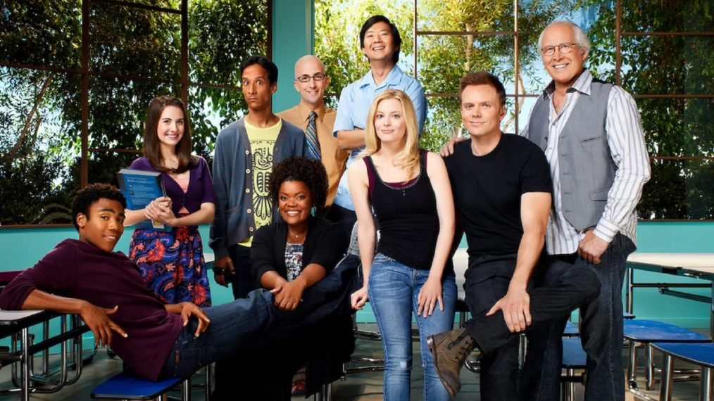

Zhe Min’s NM2207 Final Project
Six Seasons and a Data Story: NBC’s “Community” Data Analysis
Community (2009-2014)
Background
Community was an American sitcom produced by NBC that ran from 2009 to 2014. It had a historically rocky start, middle and end, with show runner Dan Harmon being fired midway during the show, before being brought back for the show’s 5th and 6th seasons.
Community frequently experimented with genre and often utilised its sitcom format to parody existing sitcom tropes. This led it to become a cult classic amongst fans who were frequently exposed to and aware of such tropes, but it meant that Community did not do well with the masses.
Thus, I plan to explore the trends within Community’s rise and fall, with an analysis of each episode’s IMDb ratings. I will also look at categories such as directors and even episode titles. Since Community ran for 6 seasons and 110 episodes, it makes for quite a detailed and interesting analysis.
Main Question
The question I am going to answer is “What can we find out from the run of the tv show Community?”
Why ask this question?
Community has a legacy of being a cult classic television show. What this means is that Community is considered culturally relevant despite it being released a decade ago. It also still has a consistent and dedicated fanbase, and it has been argued to have changed the way people produce and watch sitcoms today. According to IMDb, user ratings influence viewer choices and perceptions of TV shows, making it crucial to analyze how “Community” is perceived across its seasons to gauge its overall impact and success.
According to Screenrant, Community often experimented with genres and was not like other sitcoms airing at the time. Charting the show’s success can help promote new and interesting sitcoms in our current time period. Additionally, many established directors such as Joe and Anthony Russo made their mark in Community episodes. Charting the series’s directors could allow us to understand more about the series’s popularity.
On a personal level, Community is one of my favourite sitcoms. I fell in love with it in 2020, during the pandemic, and while I was not there personally, watching it while it aired, I noticed that it still had immense popularity despite being released in 2009. It is hard to go anywhere on the internet without bumping into a reference to Community. With talks of a movie being produced a decade after its last season, it’s clear that Community had a long lasting impact on the world. Hence, I want to find out as much as I can from its run.
Dataset
I will be using this dataset uploaded by Bill Cruise, which was updated 2 years ago.
There are 2 csv files, “community_episodes.csv” and “community_imdb.csv”. To make the process of my data analysis easier, I chose to combine both csvs into one, and clean up the data by removing a duplicated column, “episode_num_overall”. I named this csv “community.csv”. The name of the variables in the file are as follows:
[1] "...1" "season" "title"
[4] "original_air_date" "episode_num_in_season" "episode_num_overall"
[7] "directed_by" "written_by" "prod_code"
[10] "us_viewers" "imdb_rating" "total_votes"
[13] "desc" For context, the variable “desc” stands for “description”, and provides a short description of a particular episode as provided by IMDB.